SourceKit Pilot Guide
Onboarding walkthrough for AI Fund portfolio CEOs. Michael Rubino, AI Fund, 2026-10-16.
SUMMARY
SourceKit is an AI talent-sourcing tool. You paste a job description; it builds a sourcing strategy (target open-source projects, companies and skills), finds matching engineers on GitHub, and scores each one 0-100 with the evidence behind the score. People Search, email lookup, outreach drafts and a pipeline board cover the rest of the workflow. The pilot is free and invite-only, and a first session takes about 10 minutes.
FIRST SESSION
- Paste a job description and let the AI build a sourcing strategy.
- Run the search and review scored candidates.
- Turn on Hidden Gems, open a profile and add a candidate to your pipeline.
- Run People Search, then find emails for a few people on your shortlist.
- Generate candidate briefs or outreach drafts in Bulk Actions.
GETTING STARTED
- Go to https://getsourcekit.vercel.app.
- Sign in with Continue with Google or with email and a password.
- Use the email address your invitation was sent to. The pilot is invite-only; other addresses are not let in.
- You land on New Search. All other tabs are in the left sidebar.
Access issue: reply to Michael with the email you want to use and he will add it.
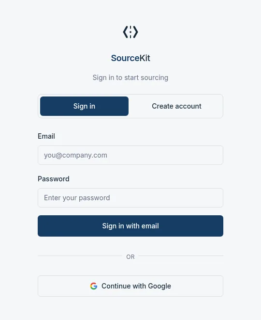
WALKTHROUGH
Steps follow the order of a typical first session.
1. Start a New Search
Open New Search, choose Job Description, and paste the full job description or a link to the posting. Click Build Sourcing Strategy.
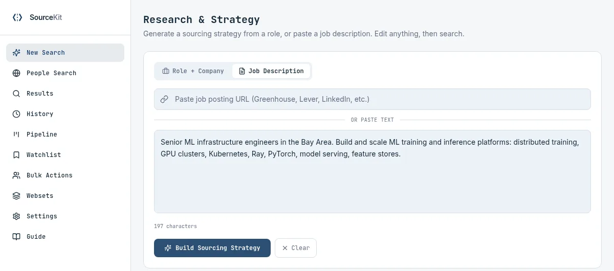
2. Review Your Sourcing Strategy
The AI builds the plan in four stages, usually in 30-60 seconds: analyzing the role, identifying target repos, companies and skills, drafting EEA signals and a role overview, and enriching target companies. Progress is shown live, and stages can finish in any order.
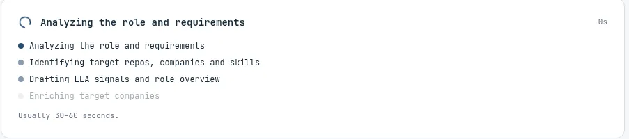
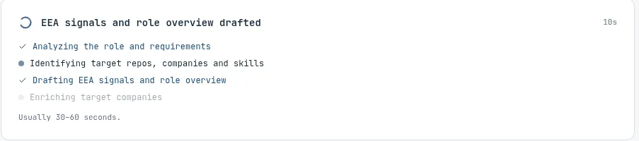
Finished Strategy
The result is a Search Query that describes the ideal candidate (it drives the search, and you can edit it) plus four editable parts. The bar at the bottom summarizes what is included, here 10 repos, 6 companies and 14 skills, and holds the Search with this strategy button.
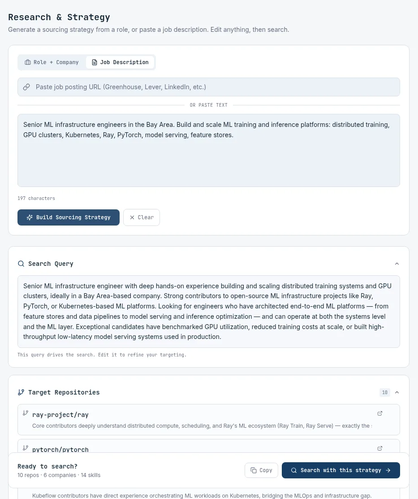
Four Parts of the Strategy
Every entry is a suggestion. Add, remove or edit anything before you search.
Target Repositories
Open-source projects where the right engineers do their work. Each has a one-line reason it matters for this role.
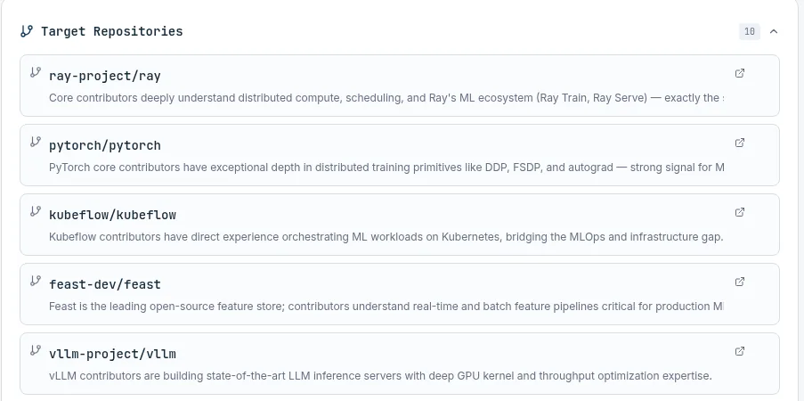
Companies to Source From
Teams likely to have the talent, such as Anyscale, Databricks and NVIDIA here. Each has a blue tag: Competitor (direct competitors for this talent), Adjacent (related teams with transferable skills) or Talent Hub. Change a tag or add companies.
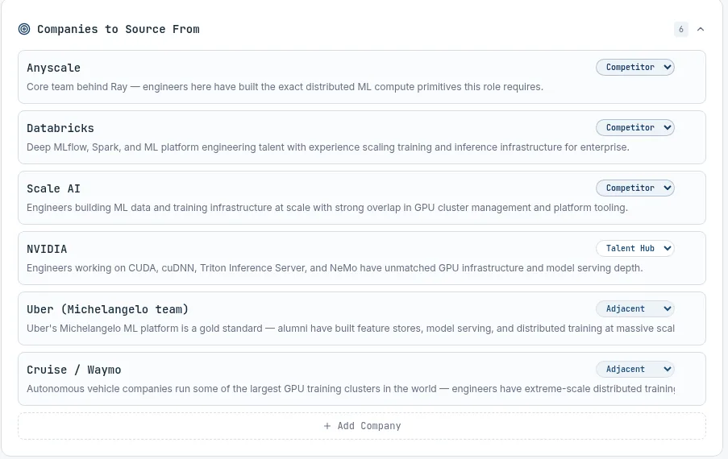
Skills
Split into Must Have (blue chips) and Nice to Have (gray chips); the view is shortened here. Must-haves carry the most weight in scoring; nice-to-haves add a boost.
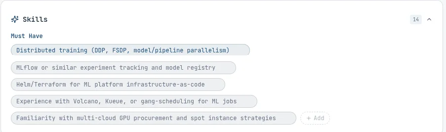
EEA Signals
EEA = Evidence of Exceptional Ability: signs that someone is outstanding, such as owning a core project, major framework contributions or published technical work. Suggested automatically; switch off any you do not need.
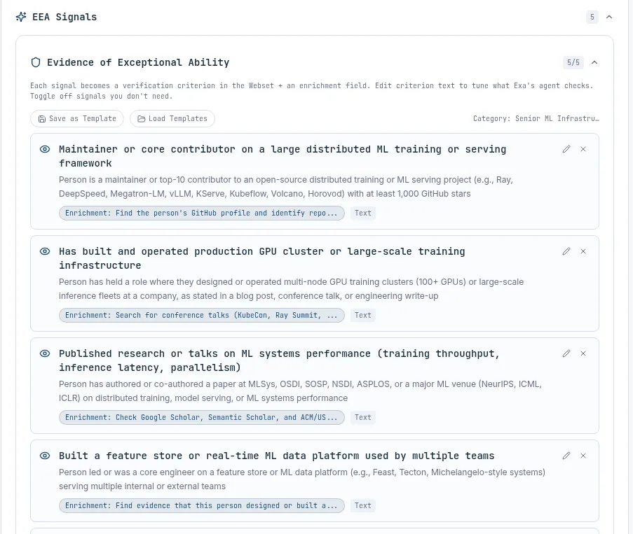
When it looks right, click Search with this strategy. The search takes a couple of minutes.
3. Read Your Scored Results
At the top, AI-Parsed Search Criteria show how your strategy was turned into search terms. Each candidate gets a fit score from 0 to 100 and a one-line reason based on their actual work; blue chips under the name show the projects and commit counts behind it. Highest scores appear first. Narrow the list by location, seniority, language or minimum score.
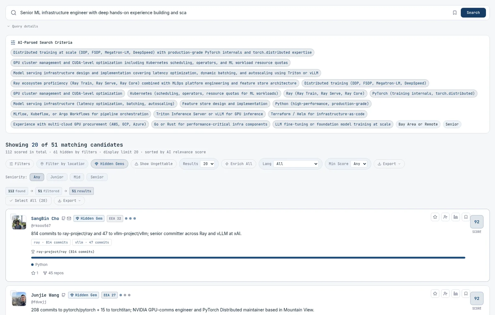
4. Find Hidden Gems
A hidden gem is a strong engineer with a low public profile: high fit score and deep contributions to important projects, but few followers. They hear from recruiters less often, so they are more likely to respond.
How to spot one: look for the blue Hidden Gem label next to a name, or turn on the Hidden Gems filter to see only these people.
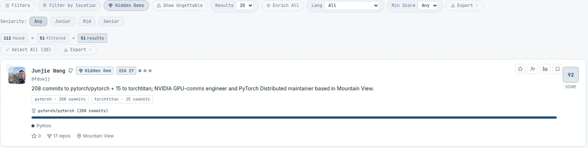
Example: SangBin Cho
Senior committer on both Ray and vLLM, two of the most important projects for this ML infrastructure role; currently at xAI, previously Anyscale. Score 92; 814 commits to ray-project/ray and 47 to vllm-project/vllm; 240 GitHub followers. Deep work on core projects with a modest public profile is the pattern SourceKit flags.
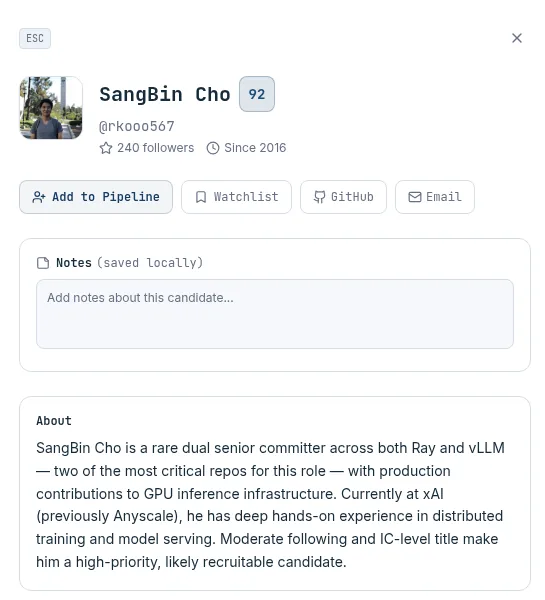
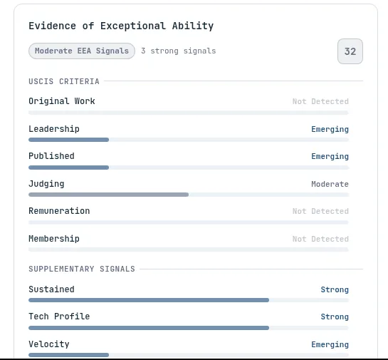
Ungettable candidates (founders, executives, board members or very famous engineers) are hidden by default. Click Show Ungettable to include them.
5. Open a Candidate and Add to Pipeline
Click a name to open the profile panel shown above: notes, a plain-English summary and the evidence behind the score, with notable work and an outreach draft further down. Click Add to Pipeline at the top of the panel; a confirmation appears and the candidate lands in the Sourced column of your pipeline (step 8).
6. Widen the Net With People Search
People Search runs a role or query across Exa people profiles, Harmonic and GitHub at once (plus Parallel when enabled). Narrow it by titles, locations, skills or target companies. Results are deduplicated and saved, and a badge on each person shows the source. Hidden Gems and Show Ungettable work here too. Deep search builds a slower, verified list in the background.
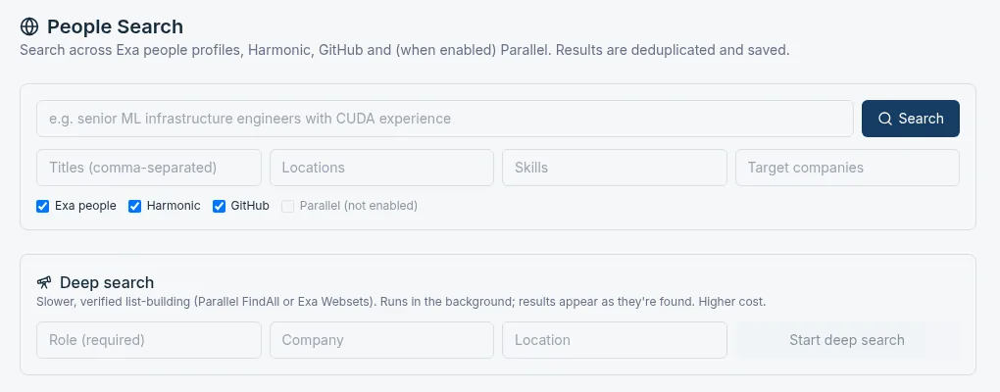
7. Find Emails for Your Shortlist
Tick the people you want to contact (up to 25 at a time) and click Find emails. It takes up to a minute; a note then reports how many new addresses were found.
8. Track Candidates on the Pipeline
Columns: Sourced, Contacted, Recruiter Screen and Moved to ATS (your applicant tracking system), plus Not Interested and Rejected. Drag a card to the next column as conversations progress. Sort by Score, Analytics and Export sit at the top right.
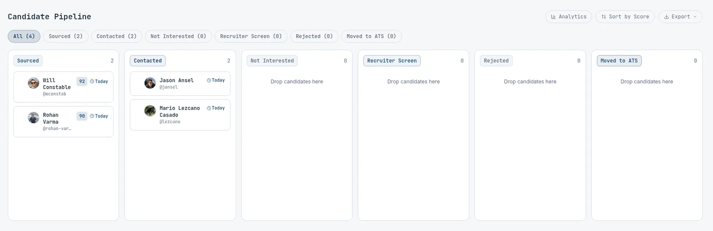
9. Batch Work in Bulk Actions
Select people from your pipeline and run one action across all of them: candidate briefs for your team, personalized outreach drafts, a refined shortlist or a side-by-side comparison. You can also ask questions about the selected candidates in plain English.
10. Reopen Past Searches in History
Every search is saved automatically with the number of candidates found. Open History to revisit or rerun one without starting over.
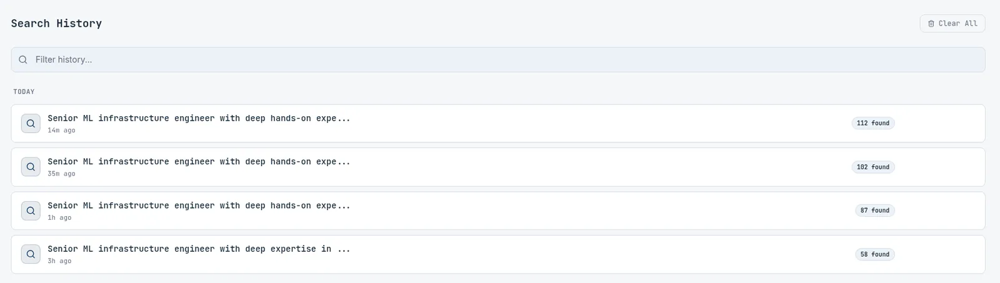
TIPS
- Paste the full job description. More context on role, team and must-haves gives a sharper strategy and better scores.
- Start with Hidden Gems. Strong, overlooked engineers are the most likely to reply to a thoughtful note.
- Find emails only for your shortlist. Review people first, then look up contact details for the few you want to reach. This saves your daily allowance.
- Allow a few minutes per search. A strategy takes under a minute and a full search a couple of minutes. You can switch tabs while it runs.
DAILY LIMITS
Per account. Limits reset daily at 5:00 pm PT.
| Unit | Daily limit | Used by |
|---|---|---|
| Searches | 25 | Sourcing searches and People Search |
| Enrichments | 150 | Find emails and extra profile details |
| AI drafts | 100 | Strategy building, outreach drafts and Bulk Actions |
If you hit a limit, continue after 5:00 pm PT.
NEXT ACTION
Sign in with your invited email and run one search on a role you are hiring for now. Send questions or feedback by replying to Michael; every note feeds the next build.